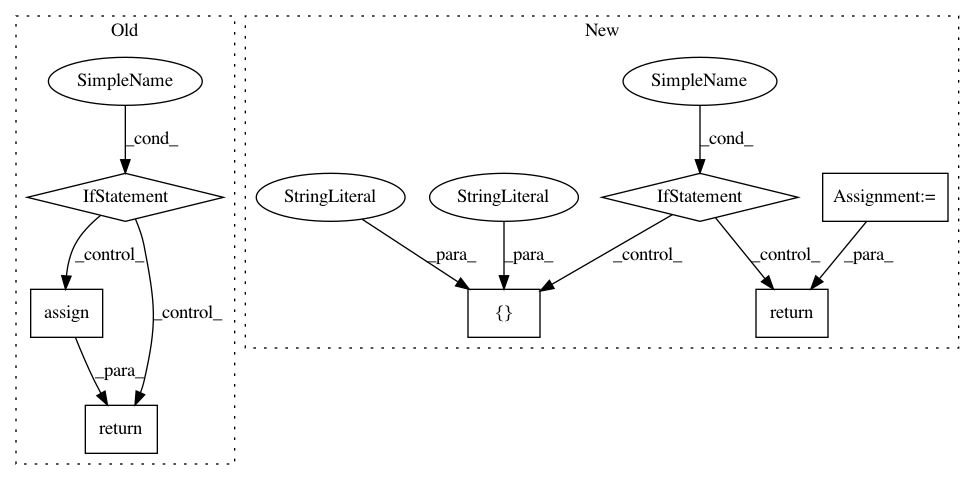

04416f58f1d6b13bbdd833ad516718503637ce9a,QUANTAXIS/QAFetch/QACrawler.py,,QA_fetch_get_sz_margin,#Any#,52
Before Change
pandas.DataFrame -- res for margin data
if date in trade_date_sse:
return pd.read_excel(_sz_url.format(date)).assign(date=date).assign(sse="sz")
//http://data.eastmoney.com/zjlx/002433.html
def QA_fetch_zjlx(code=None):
//获取资金流向
After Change
pandas.DataFrame -- res for margin data
if date in trade_date_sse:
sz_url = _sz_url.format(date, random.random())
data = pd.read_excel(sz_url).assign(date=date,sse="sz")
data.columns=["code","name","leveraged_buyout","leveraged_balance","margin_sell","margin_left","margin_balance","totalbalance","date","sse"]
data.code = data.code.apply(lambda x: ("00000"+str(x))[-6:])
return data
else:
pass
def QA_fetch_get_margin_all(date):
return pd.concat([QA.QA_fetch_get_sh_margin(date), QA.QA_fetch_get_sz_margin(date)])
//http://data.eastmoney.com/zjlx/002433.html
def QA_fetch_zjlx(code=None):
In pattern: SUPERPATTERN
Frequency: 3
Non-data size: 7
Instances
Project Name: QUANTAXIS/QUANTAXIS
Commit Name: 04416f58f1d6b13bbdd833ad516718503637ce9a
Time: 2021-01-02
Author: yutiansut@qq.com
File Name: QUANTAXIS/QAFetch/QACrawler.py
Class Name:
Method Name: QA_fetch_get_sz_margin
Project Name: QUANTAXIS/QUANTAXIS
Commit Name: 5b4d04de17457286fe4e5f3e0e8295db42d0f064
Time: 2020-04-05
Author: 11652964@qq.com
File Name: QUANTAXIS/QAFetch/QAQuery.py
Class Name:
Method Name: QA_fetch_index_min
Project Name: QUANTAXIS/QUANTAXIS
Commit Name: 4113a6a3be19167a8c551f8ae20e849ac851e52c
Time: 2019-03-25
Author: zhongjy1992@outlook.com
File Name: QUANTAXIS/QAFetch/QAQuery.py
Class Name:
Method Name: QA_fetch_index_day